10 display-bike techniques for Emmet's technique library (session 4G), reworked after your second e-bike session (2026-11-09: 260 parts, rubric 1, 2, 1). The wheels now spring against their shocks instead of hanging on them, every axle has a bush, a half bush, a crank arm, or a cross block on it, the kickstand is on the left swingarm arm, and three new techniques carry the bodywork. Each picture is a render of the technique's example, which validates with no findings on ldraw-mini (its test). The ten together make the 232-part bike below, which validates clean; the agent adds the detail on top. They're written from general building knowledge, not from any model's file. Every one starts as Accept: switch the ones you don't want, add a note if it helps, then copy your answers and paste them to Claude.
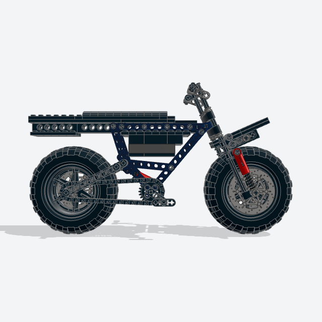
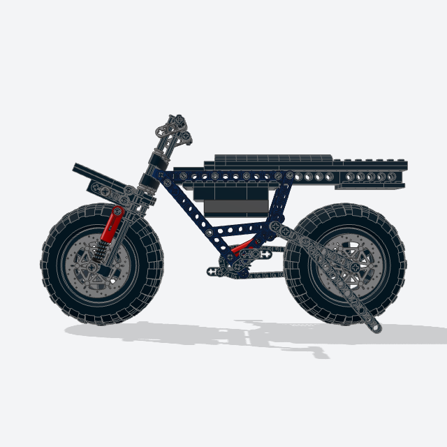
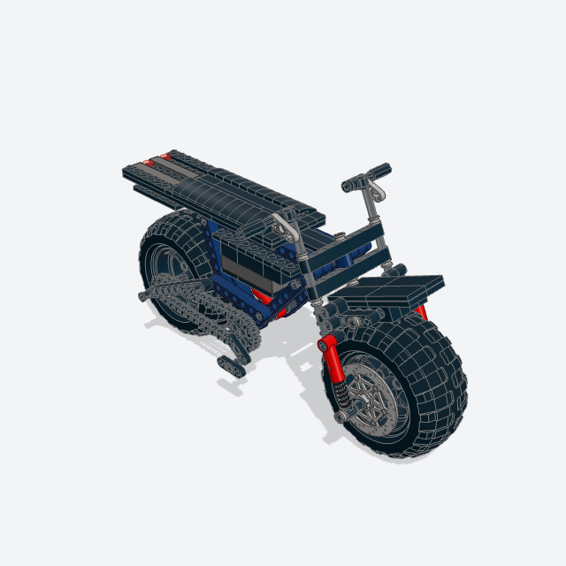
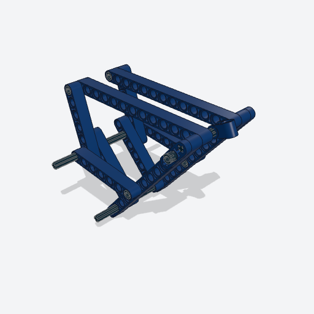
motorbike_frameFive Technic beams on edge a side, fitted in whole studs to the photo's head, crank, seat, and rear axle, with the top tube level.
The skeleton everything else hangs on, shaped like this bike rather than a stock one, and level on top so the seat and battery go on its holes.
Note: Every cross axle is held: the head axle by a thin liftarm each side, pinned to the down tube, which also stops the head bearing tipping; the pivot axle by the swingarm's bushes; the crank axle by the crank arms; the shock mount by half bushes either side of the shock's eye. The fit also picks the swingarm's angle so the shock fits exactly.
x, y, z, head, 5.4), crank, -4.1), seat, 4.6), rear, -3.6), rake, color, pin_color, axle_color, lock_color, titledata/techniques/motorbike_frame.py32523 + 32316 + 32524 + 40490 + 32525 + 41239 + 32278 + 2780 + 44294 + 3708 + 3737 + 3706 + 6632 + 6536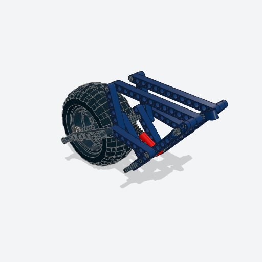
swingarm_shockThe rear swingarm on the pivot axle, one shock absorber in the middle from a cross axle a stud behind the pivot up to the frame, and the rear wheel.
The rear wheel can only rise by squeezing the spring. Your note: the old twin shocks hung on mounts that swung free on one pin, so they did nothing.
Note: A bush on each end of every axle (the pivot, the shock's, the rear axle), outside the arms.
frame, reach, wheel, color, shock_color, axle_color, bush_color, titledata/techniques/swingarm_shock.py40490 + 32524 + 32525 + 41239 + 32278 + 73129 + 3708 + 3713 + 32123a + 44772c01 + 88517c01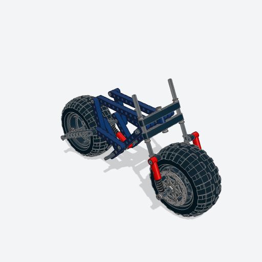
suspension_forkA fork that steers and springs: a triple tree on a steerer turning in the head bearing, fork tubes locked in it, a slider on each tube carrying the front axle, and a shock each side as the spring.
Your note: the old fork hung the wheel on its shocks, so it wasn't stable. Now the tubes guide the wheel and the shocks hold it down the fork.
Note: Axle 16 tubes with a half bush above the upper clamp and below the lower one; the front axle comes out level with the rear one, half bushes on its ends.
frame, swingarm, wheel, color, tube_color, shock_color, axle_color, bush_color, titledata/techniques/suspension_fork.py3705 + 32123a + 40490 + 32524 + 50451 + 6536 + 73129 + 2780 + 3708 + 3737 + 44772c01 + 88517c01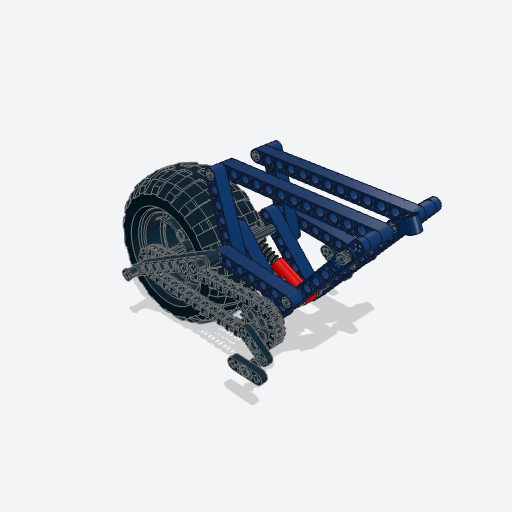
chain_driveA chainring on the frame's crank axle, a sprocket on the rear axle, a loop of chain links round them, and crank arms with pedals.
The chain the photo shows, in the plane inside the right swingarm arm.
Note: The crank arms hold the crank axle's ends.
frame, swingarm, pedals, ring_color, sprocket_color, chain_color, crank_color, titledata/techniques/chain_drive.py3648b + 4019 + 3711 + 6632 + 3749Retired 2026-11-10: folded into suspension_fork (discs) and swingarm_shock (disc), so each disc goes on with its axle, before the axle closes (Barry, after his fifth e-bike session; docs/decisions.md).
disc_brakeBrake discs on the front axle, between the hub and each slider, and one on the rear axle inside the left arm.
The discs the photo's bike has; their 3-stud radius sits inside the rim, clear of the tire.
Note: There's no separate caliper: there's no room beside the slider, which stands in for it.
fork, swingarm, disc_color, both, titledata/techniques/suspension_fork.py and data/techniques/swingarm_shock.py65416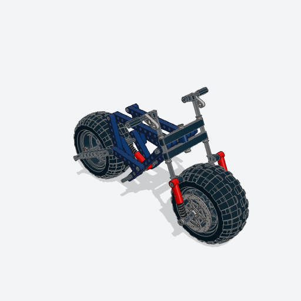
handlebarsBars on the fork tubes' tops with levers and grips, turning with the fork.
The tall bars of the photo; the tubes stand above the upper clamp for them.
Note: Each bar is now held by a half bush inside its mount, with the lever outside, so it can't slide out.
fork, rise, color, grip_color, lever_color, droop, titledata/techniques/handlebars.py6536 + 3705 + 32123a + 6632 + 59443 + 4519 + 32073 + 3706 + 44294 + 3707 + 3737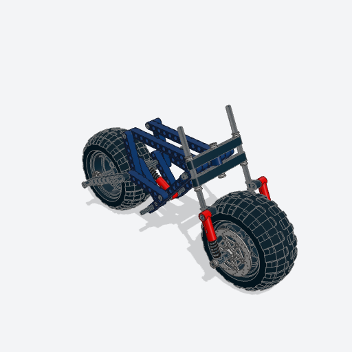
kickstandA beam pinned to the left swingarm arm and swung down and back to the table, level with the tires.
Your note: the kickstand goes on the rear left swing arm, not the frame's middle. The bike stands on its wheels and the stand (the left side, below).
Note: A friction pin holds it at its angle, as on a set's stand.
swingarm, hole, color, titledata/techniques/kickstand.py2780 + 32316 + 32524 + 40490 + 32525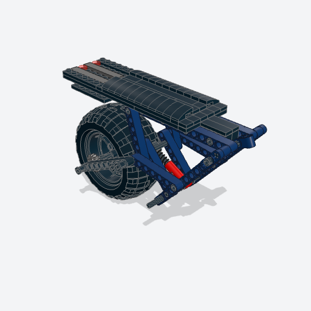
bike_seat_rackNew: a long flat seat and a rear rack with tail lights, and a rear fender over the wheel, on a spine of Technic bricks pinned along the level top tubes.
The photo's long seat and rack, which carry most of the bike's look.
Note: The rack's underside and the fender go in from below, over the wheel, so they're one section built on its own.
frame, seat, rack, color, rack_color, spine_color, light_color, fender, titledata/techniques/bike_seat_rack.py3028 + 3033 + 3036 + 3958 + 3703 + 3894 + 3701 + 3702 + 2780 + 3022 + 3021 + 3020 + 3795 + 3034 + 3832 + 3024 + 3023 + 3623 + 3710 + 3666 + 3460 + 3070b + 3069b + 63864 + 2431 + 6636 + 4162 + 11477 + 98138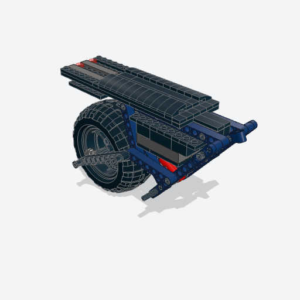
battery_caseNew: the e-bike's battery, courses of bricks hung under the spine in the frame's triangle, each as long as the tubes leave room for at its height.
The battery in the frame's triangle, as on the photo's bike.
Note: A course of plates across ties it to the spine; the frame closes round it, so it's one section put on whole.
frame, seat, width, color, panel, titledata/techniques/battery_case.py3666 + 3710 + 3023 + 3007 + 2456 + 3001 + 3002 + 3003 + 3832 + 3034 + 3795 + 3020 + 3021 + 3022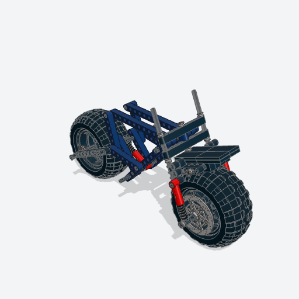
front_fenderNew: a high front fender, a blade of plates and tiles on brackets fixed to the fork tubes, so it turns with the fork and stays put as the wheel springs.
The photo's high front fender.
Note: A cross block 2 x 2 on each tube holds an L-liftarm; two axles between them carry Technic bricks with their studs up the fork, and the blade sits on those.
fork, length, color, top_color, bracket_color, titledata/techniques/front_fender.py32291 + 2780 + 32140 + 44294 + 3707 + 32073 + 3706 + 32123a + 3701 + 3020 + 3022 + 87079 + 3068b